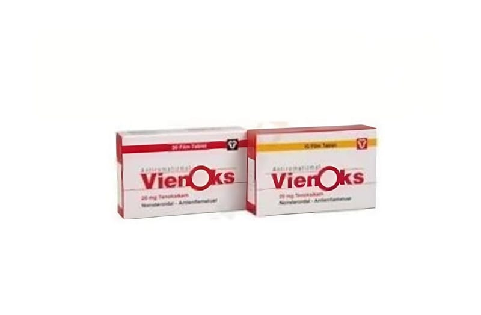

Vienoks 20 mg Film Tablet, 10 Adet

Ne için kullanılır
KT · Bölüm 1VİENOKS tenoksikam etken maddesini içerir. Tenoksikam, ‘Non-Steroidal Antiinflamatuvar ilaçlar’ (NSAİİ) grubuna bağlı bir ilaçtır. Tenoksikam, ağrı kesici, ateş düşürücü ve iltihap giderici özelliğe sahiptir.
VİENOKS tabletlerin her biri 20 mg etkin madde içermektedir ve tabletler oval, silindirik, bikonveks ve grimsi sarı renkli görünüşlüdür.
VİENOKS 20 mg film tablet 10 veya 30 tablet içeren ambalajlarda sunulmaktadır. VİENOKS, kireçlenme (osteoartrit), eklemlerde ağrı ve şekil bozukluğuna neden olan romatoid artrit hastalığı ve sırt eklemlerinde sertleşme ile seyreden ağrılı ilerleyici bir romatizmal hastalık olan ankilozan spondilitin belirti ve bulgularının tedavisi ile damla hastalığı (akut gut artriti), akut kas iskelet sistemi ağrıları, ameliyat sonrası ağrı ve ağrılı adet tedavisinde etkilidir.